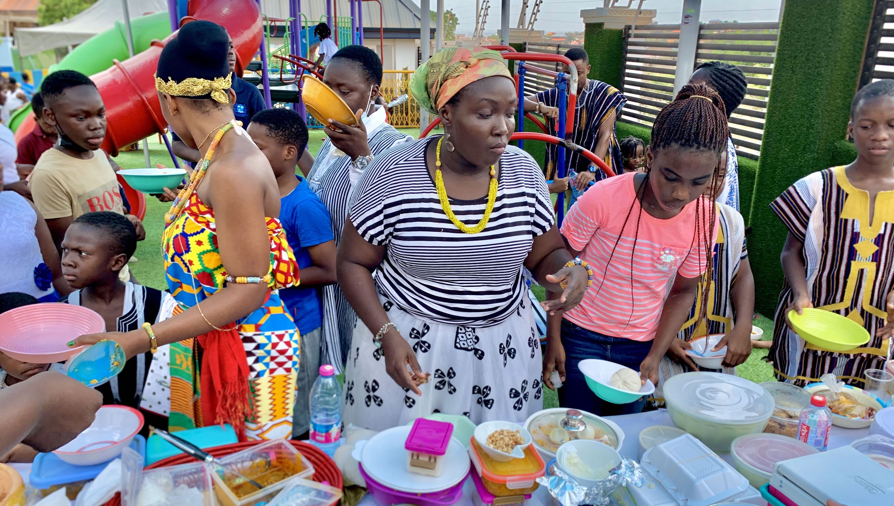

Our annual Traditional Day celebration brought the rich cultural heritage of Ghana to life through vibrant displays of dance, fashion, and cuisine.

Celebrating Our Heritage
The Al-Hikmah Islamic Montessori School Traditional Day 2022 was a colorful showcase of Ghanaian culture, with students and staff dressed in beautiful traditional attire representing various ethnic groups from across the country.
The day began with an opening ceremony featuring cultural performances from different regions. Students presented traditional dances including Adowa from the Akan, Agbadza from the Ewe, and Bamaya from the Dagomba people.

Fashion and Cuisine
A highlight of the event was the traditional fashion parade, where students showcased clothing from different ethnic groups, explaining the significance of various fabrics, patterns, and accessories.
The school cafeteria was transformed into a Ghanaian food bazaar, offering dishes like:
- Fufu with Light Soup (Ashanti Region)
- Banku with Okro Stew (Greater Accra)
- Tuozafi (TZ) with Ayoyo Soup (Northern Region)
- Kenkey with Fried Fish (Central Region)
"Traditional Day is more than just a celebration - it's an important educational experience that helps our students appreciate and preserve our cultural heritage."
Cultural Exhibitions
Classrooms were converted into cultural exhibition spaces where students displayed artifacts, tools, and household items from different regions. The History Club presented a special exhibition on the evolution of Ghanaian traditional clothing over the past century.
The day concluded with a grand durbar attended by parents and special guests, including Nii Adote Obuor XIII, a local chief who commended the school for keeping Ghanaian traditions alive among the youth.